← 返回阅读库 · 原论文目录
论文讲解阅读文档 · 机器人学 · v109
Off-DADS Emergent Real-World Robotic Skills via off policy RL[2004.12974]
视频时长 00:10:16；讲解文字 4,422 字符；提取讲解画面 28 张。按视频原顺序阅读，每段文字保留时间戳。
文字来自整段视频的自动语音转写，按自然停顿分段，并与 PPT / 论文页面 / 演示画面对齐。未将讲解压缩为摘要；术语、数字和口述公式请结合画面及原论文核对。 阅读稿已校正规范部分明确术语误识别；原始逐字稿和每处修改记录另行保留。
讲解画面为源视频截图（640×360），不是可编辑 PPT 文件。全片按每秒 2 帧扫描内容变化，逐步展开页保留；连续动画保留代表画面。清晰度受源视频限制。
下载完整资料包 · 含离线 HTML、PDF、Word、全部 PPT 画面和字幕。
原论文与材料
Emergent Real-World Robotic Skills via Unsupervised Off-Policy Reinforcement Learning · 下载完整 PDF（12 页）
按时间阅读
00:00:00–00:00:28 · 画面 001
 00:00:00–00:00:28 · 画面 001
00:00:00–00:00:28 · 画面 001大家好,今天我们来介绍 Emergent Real-World Robotic Skills via Unsupervised Off-Policy Reinforcement Learning。这篇论文是之前介绍的 DADS Dynamics Aware Unsupervised Discovery of Skills,它的论文的后续。那么相对于前作,论文首先是在 Real-World,是真实世界中跑了一个机器人。
再就是本文是一个 off policy 相对于前作的 on-policy 极大提升了 sample efficiency 那么在今天的视频中我们首先会介绍一下前作中存在的局限也就是本文改进的出发点然后是本文使用的方法最后是作者汇报的结论那么首先看到我们的前作 dads 如果你对这篇论文不熟悉非常建议你先去看我们之前的一个视频那么简单来说这篇论文里面它在 unsupervised learning 的时候
00:00:28–00:00:39 · 画面 002
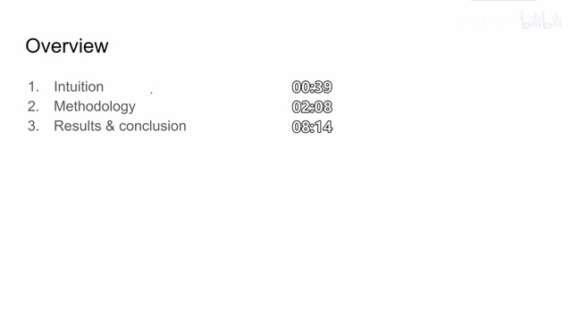
00:00:28–00:00:39 · 画面 00200:00:39–00:00:48 · 画面 003
00:00:39–00:00:48 · 画面 00300:00:48–00:00:49 · 画面 004
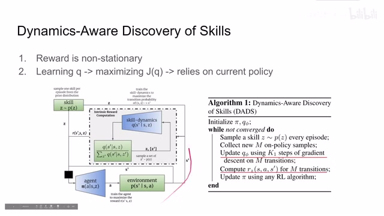
00:00:48–00:00:49 · 画面 00400:00:49–00:00:53 · 画面 005
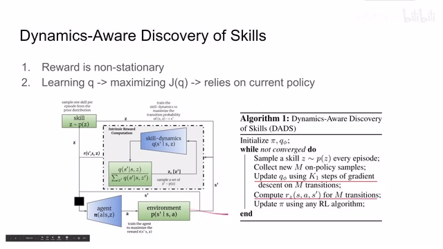
00:00:49–00:00:53 · 画面 005是使用的是 on-policy 的也就是说我每次更新我的 skill dynamics 和更新我的 agent policy 的时候呢都需要用最新的 policy 来跑一遍来采集数据这样呢你每更新一次你的模型呢都要重新跑一次它的 data efficiency 是非常低下的所以呢所以就想到我能不能把原来的这个 model 改成 off policy 的这样子呢我的原来的采集的模型呢就都可以使用那么从 on-policy 改到 off policy 呢
00:00:53–00:00:59 · 画面 006
00:00:53–00:00:59 · 画面 00600:00:59–00:01:01 · 画面 007
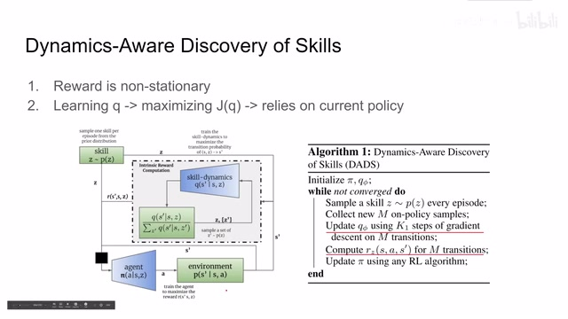
00:00:59–00:01:01 · 画面 00700:01:01–00:01:14 · 画面 008
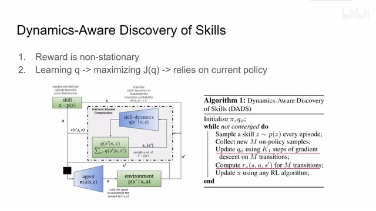
00:01:01–00:01:14 · 画面 00800:01:14–00:01:17 · 画面 009
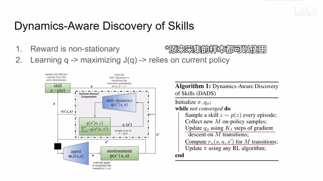
00:01:14–00:01:17 · 画面 00900:01:17–00:02:06 · 画面 010
00:01:17–00:02:06 · 画面 010主要存在两个问题首先第一个是这个 reward 也就是我们每次计算这个给 reinforcement learning 提供的这个 reward 的时候呢都是基于这个 skill dynamics 这个网络他来推算出这个 reward 那我在之前训练的时候这个 state transition pair 他是用当时这个 skill dynamics model 去估算出的这个 reward 那现在模型已经更新了这个 reward 就变掉了但是这一点呢是非常好克服的你从 replay buffer 里面拿出一个 batch 之后
你用新的当前的这个 skill dynamics再给它重新估计一下当前的这个 reward它其实就可以了这一点呢是好克服的但是呢存在了另一个问题就是我在训练这个 q 的时候这个 q 呢它是依赖于当前的这个 policy 的
00:02:06–00:02:08 · 画面 011
00:02:06–00:02:08 · 画面 011那么我们直接来看它的公式首先原文 dads
00:02:08–00:02:10 · 画面 012
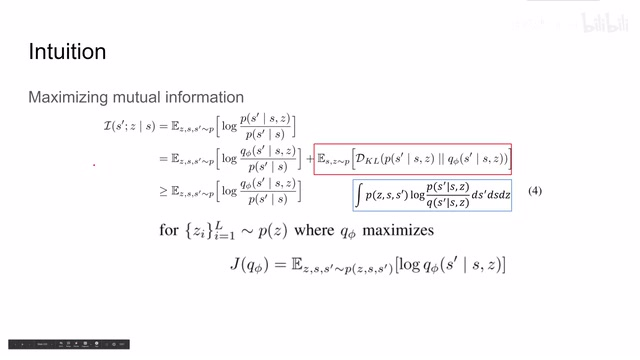
00:02:08–00:02:10 · 画面 012我们是要 maximize 这个 mutual information
00:02:10–00:03:57 · 画面 013
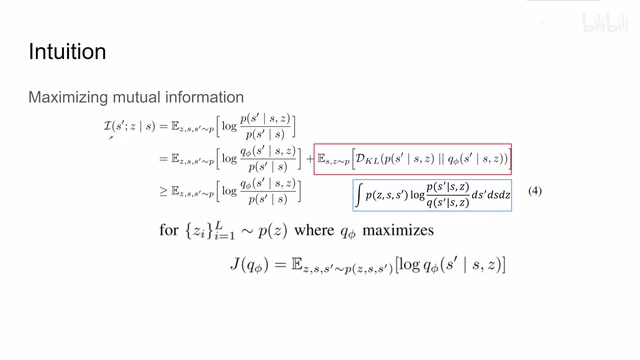
00:02:10–00:03:57 · 画面 013这项呢我们通过引入 q network把它拆成了两项拆上两项之后,就可以限制了 Mutual Information 的 Lower Bound,我们在 Unsupervised 的阶段是优化了这一项,希望 KL Divergence 尽量小,这样我们的 Mutual Information 会尽量的贴近 Lower Bound。
当然我指的是在 Unsupervised 的情况下,我们人工生成一个 reward,再去做 reinforcement learning,这个环节我们是尽量提升了 Lower Bound。在这一部分呢我们是不需要对这个 Q5这个 network 来做训练的所以呢我们就不用管这一块我们重点关注的是在这一部分怎么把它的原来的 on policy改成 off policy然后呢我们看到跟这个式子呢根据它的定义我们把里面的期望展开把它的 K2 divergence 展开然后呢把这个 givenSZS'这个 P 和前面的期望的这个 PSZ 乘起来那么就是得到这个 ZS 和 S'他们三个同时发生的概率嘛然后呢这个是 KL divergence 的这个 log 项目那么它的表达式呢写出来就是这个样子那么这个式子它可以写成一个变量是 ZSS'形如这样的期望的这样一个式子
但是期望里面是 log 上面分子是 P 下面是 Q5 我们是希望 minimize KL divergence 期望的也就是说我们希望这个式子它的值尽量小那么我们能优化的就只有 Q5 所以说在本文中作者换了一个说法就是我们希望 Q5 把 log 项目变得越来越大这样子呢上面这个式子呢就会越来越小了这个呢就是我们要优化的这个目标函数那么下面我们来演示为什么说这个目标函数是 on policy 的他为什么依赖于现在的 policy 我们按照定义呢把这个目标函数再打开这里呢这个 zss prime 共同发生的概率呢我们直接按照这个条件概率的形式
00:03:57–00:05:03 · 画面 014
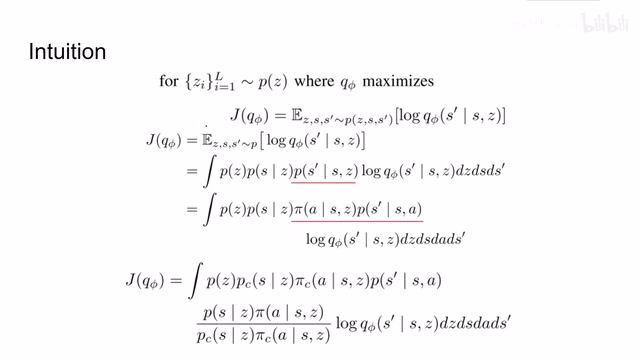
00:03:57–00:05:03 · 画面 014这是 z 的概率这是 given z s 的概率这个是 given s c s prime 的概率打开就是这样形式我们可以看到呢这个式子 given s c s prime 它呢其实是由我们的 policy 给出的也就是说这里的 policy pi 它是通过 given s 和 z 产生一个 action 那么这个 action 呢和这个 state 环境交互来产生这个 s prime 这也就是为什么我们的这一个项目它是依赖于我们当前的 policy 的那么整个之前收集的样本呢就不适用了，那么为了解决这样的问题呢，我们就使出了常见的这个 policy gradient 使用的这个 off-policy 的手段，也就是 importance sampling。这里呢我们有一个 policy 叫做 policy，是我们当前的 policy，用这个新的 policy 呢来替换过去旧的 policy，只要在这里呢我们使用这一项来补偿一下这个式子，就可以把这个前面的这一段来替换下来了。
00:05:03–00:05:04 · 画面 015
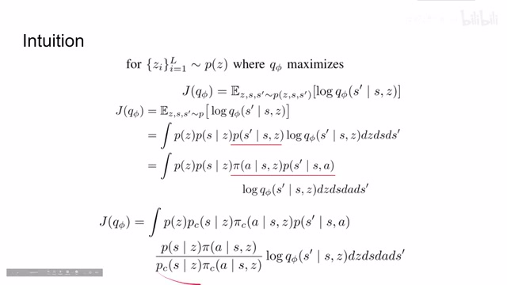
00:05:03–00:05:04 · 画面 01500:05:04–00:05:08 · 画面 016
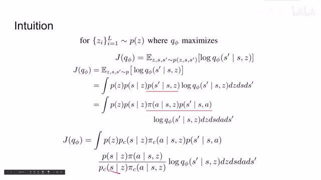
00:05:04–00:05:08 · 画面 01600:05:08–00:05:10 · 画面 017
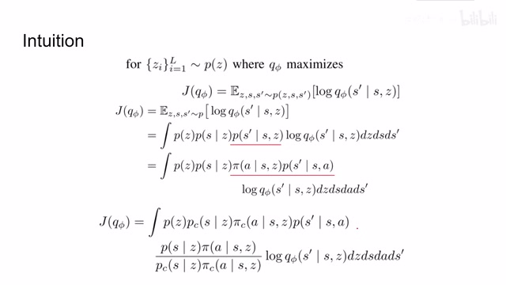
00:05:08–00:05:10 · 画面 017那么通过这样的替换呢，我们就可以把前面这一串塞成新的 policy 产生的样本它的期望的形式。我们可以看到呢，这一串 sample 呢已经是由新的 policy 来产生了，所以呢我们最终在 off policy 的情况下是要最大化这个式子来优化我们的 skill dynamics。好的，然后我们看到这个式子的导数啊，直接对它求导，因为前面这块呢跟我们的 qnetwork 都没有关系，所以呢我们就直接把导数符号
00:05:10–00:05:12 · 画面 018
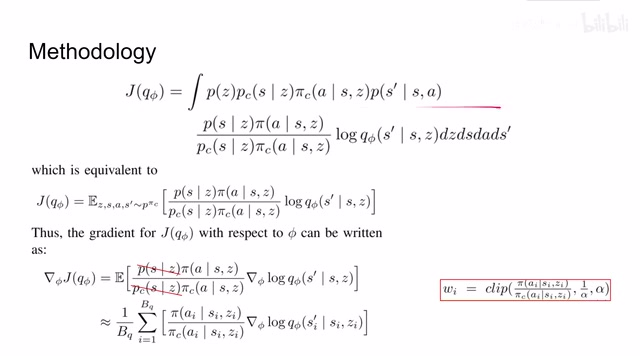
00:05:10–00:05:12 · 画面 01800:05:12–00:06:06 · 画面 019
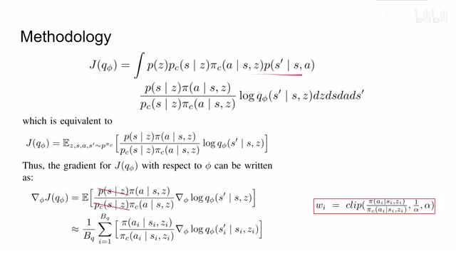
00:05:12–00:06:06 · 画面 019拿进来就可以了。那么这里呢，作者做了非常大胆的近似，首先就是这两项，既然我也不知道他俩的具体值是什么样子的，我就姑且认为他俩一样吧，这两项就取消掉了。然后呢，关于这两项作者呢这里做了一个 clip，也就是说限制这两项，让他们的变化呢不是说特别的离谱，这样帮助我们稳定这个训练的过程。那么通过以上的近似的操作呢，这个估计呢
00:06:06–00:06:08 · 画面 020
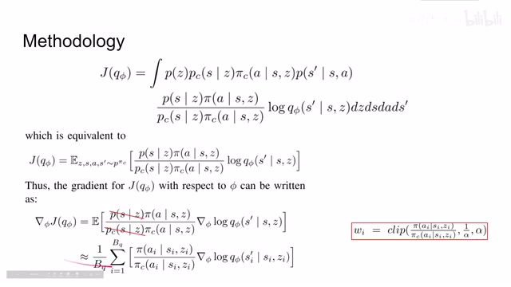
00:06:06–00:06:08 · 画面 020显然已经不是一个 unbiased 的估计了，它是有 bias 的估计了。但是一切设计都是稳定性和 bias 它们之间的 trade-off。你当然也可以直接使用 importance sampling，但是那样会带来很严重的 variance，也会导致我们的训练非常不稳定。好了，那么以上就是本文的核心的思路，我们来对比一下本文的算法跟之前的 on-policy 的算法它们的区别。
00:06:08–00:06:14 · 画面 021
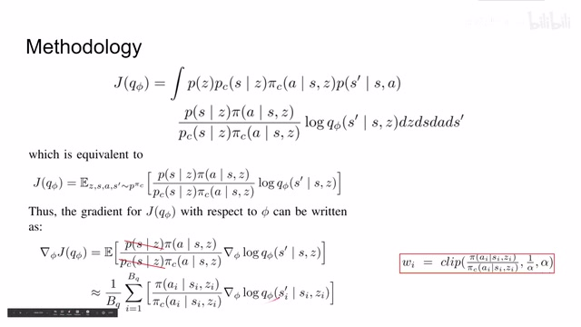
00:06:08–00:06:14 · 画面 02100:06:14–00:06:15 · 画面 022
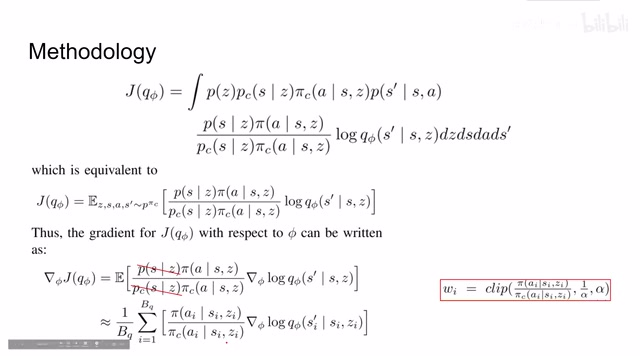
00:06:14–00:06:15 · 画面 02200:06:15–00:06:25 · 画面 023
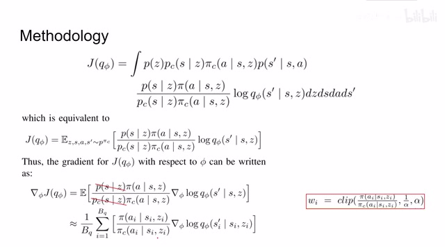
00:06:15–00:06:25 · 画面 02300:06:25–00:06:26 · 画面 024
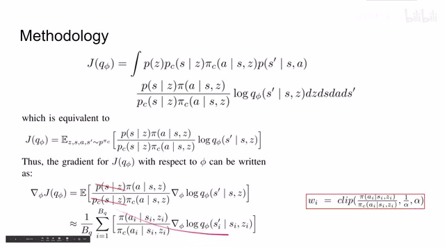
00:06:25–00:06:26 · 画面 02400:06:26–00:06:29 · 画面 025
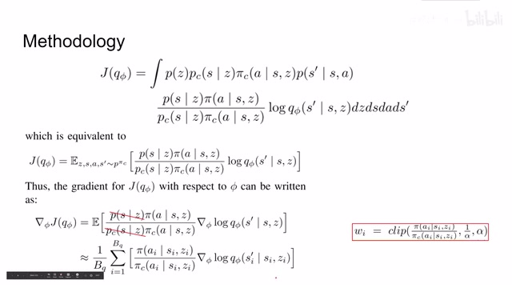
00:06:26–00:06:29 · 画面 02500:06:29–00:08:14 · 画面 026
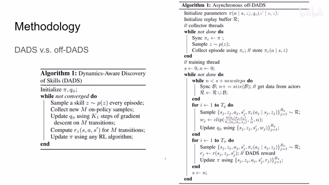
00:06:29–00:08:14 · 画面 026那么这里呢，我们看到左侧呢是原来的算法，右侧呢是本文的非同步的 of policy 的算法。非同步呢，这意味着我们可能是可以有很多个 agent 一起来收集 samples 来帮助我们更快的训练。一开始呢，我们 initialize 一个 policy，一个 skill dynamics，然后呢我们还有我们的 replay buffer，每次呢我们就使用这个 policy 来收集样本给它放到这个 replay buffer 里面就可以了。
在训练的时候我们看到首先是更新了 replaybuffer 把之前的这些收集的样本都放到 replaybuffer 里面了上面这一串又对应了这边这两行这边是收集 on-policy samples 这边是全部放到 replaybuffer 里面然后我们就可以开始更新 qfile 也就是我们的 skilledynamics 通过采集 replaybuffer 使用我们刚刚的近似还有 importance sampling我们就可以更新我们的 q5 skill dynamics。那么把它更新好之后，我们就来继续计算我们要给 policy 的 reward，也就是我们生成一些 reward 来鼓励 policy 去探索。这里我们可以看到，在从 replay buffer 中采集出来样本之后，我们要用之前训练好的 q5 重新刷新一下里面的 reward，这样 reward 就是用当前的 network 计算出来的。
然后呢，把这个 reward 再用来去更新我们的这个 reinforcement learning，就是我们的 policy 的方法。所以说总的流程上来讲呢，并没有变，只是针对于我们的 off policy 还有 synchronize，也就是有很多 agent 的情况下它的数据的收集啊训练做了一点点的调整。那么最后我们就可以看到作者汇报的结果啊，首先是虚拟环境里面击中环境下呢，我们可以看到它的横轴呢是与环境交互的次数。
00:08:14–00:10:14 · 画面 027
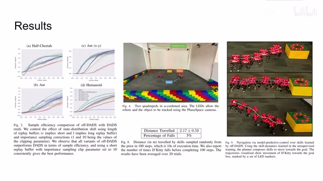
00:08:14–00:10:14 · 画面 027那么显然我们的 off policy 这种不同配置的 off policy 是要比我们之前的 on-policy 的方法它的 data efficiency 是要高很多的这里的红线是原来的 on-policy 其他颜色的线是不同配置的 off policy 借这个机会做了也是了不同配置的 replay buffer 等等这些配置那么然后看到中间这里是作者做的实际的实验就是这样一个场地里面我有这种小的机器人它的目的是要到达这个发光的物体这儿但一开始训练的时候我们会把这个东西拿走让他们自己去探索自己的 skills 但是在真实环境中你的限制还是很多的首先你不能像模拟环境里面轻松的 reset 你要自己人跑过去把这个机器搬回初始的位置等等还有这个再说供电的问题所以他们实际在训练过程中每个机器人都是有接这个线的案
甚至是从天上悬着下来来保证它的供电同时你还要有定位的问题所以你看到这里它的环境中间布置了很多定位用的摄像头然后机器人上面也有相应的发光的 LED 来标记自己的位置那么最后做着一个测试的导航任务平均需要移动 2.17 米的情况下我希望我的机器人在 100 个步骤之内能够接近我们的 object 可以看到做着试了 20 多次只有一次是失败了成功率还是不错的这边是几个案例就是我们的机器人怎么样逐渐移动到这个目标的位置好了那么总的来看本文就是在题目中所说的解决了像之前文章中的原始 on-policy 它数据效率低的问题那就是在实际的环境中做了这个实验虽然还是我们认为说这个实验的结果它可能不是那么的惊艳但是本文的提出的方法还是非常有意思的那么感谢您的收看再见
00:10:14–00:10:16 · 画面 028
00:10:14–00:10:16 · 画面 028转写与来源说明 · 0 个自动复核提示
保留 51 个原始语音片段，0 个片段触发自动复核提示。提示仅用于定位可能的术语、重复或识别问题，不等于已确认错误。
讲解画面为源视频截图（640×360），不是可编辑 PPT 文件。全片按每秒 2 帧扫描内容变化，逐步展开页保留；连续动画保留代表画面。清晰度受源视频限制。
原视频：paper/合集_2026-10-16_机器人学/[论文简析]Off-DADS Emergent Real-World Robotic Skills via off policy RL[2004.12974].mp4
SHA-256：92187d44eac3c10c2a570de5bb6d03725b6b5c4d49e7ef37216c3bfe5876b248
全文按视频语音与画面制作。原论文可从上方链接下载；完整资料包保留全文、原始逐字稿、字幕和校对记录。